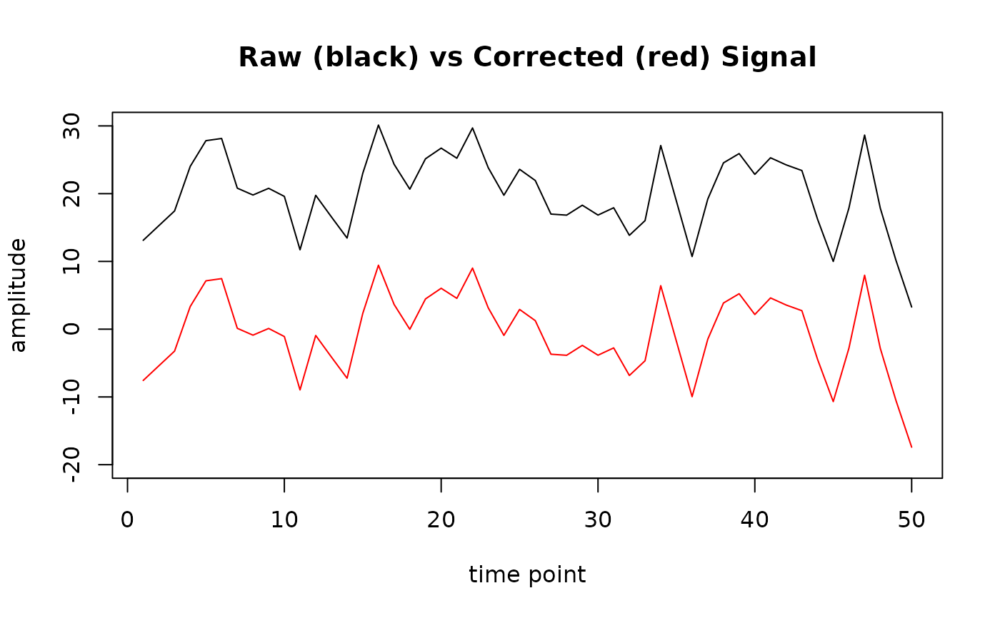

Baseline correction
baseline_correction.RdCompute amplitude values corrected to the selected baseline.
The function computes a baseline value within each epoch and subtracts it from the signal.
Arguments
- data
A data frame, tibble or a database table with input data, required columns:
timeandsignal. Optional columns:group,subject,sensor,conditionandepoch, if present, are included in the grouping structure.- baseline_range
A numeric vector of time points used as the baseline (e.g.,
baseline_range = 125:250).- type
A character specifying the type of baseline correction. Currently, only
"absolute"is supported, any other value results in an error.
Value
A data frame/tibble with added columns:
- signal_base
Signal corrected by subtracting the baseline for each epoch.
- baseline
A baseline value used for correction.
Details
If the values from baseline_range vector extend beyond the range of the time column, the baseline computation proceeds as follows:
If a part of the
baseline_rangevector is in thetimecolumn and part is outside its range, the baseline correction is computed only from the part inside atimerange.If the whole
baseline_rangevector is out of thetimerange, thebaselineand also thesignal_basevalues of the output areNA's. In both cases, the function returns the output data along with a warning.
Notes:
Rows with
NAvalues in thesignalcolumn are ignored when computing the baseline, and a warning is issued.If any grouping variable present in the data contains only
NAvalues, a warning is issued, as this may lead to invalid or uninformative grouping.
Examples
# Computing baseline correction for subject 1 on first 10 points, sensor "E1"
# a) Prepare data and compute
data01 <- epochdata |> dplyr::filter(.data$subject == 1 & .data$sensor == "E1")
basedata <- baseline_correction(data01, baseline_range = 1:10, type = "absolute")
## Note: You can also use baseline_correction() on the whole epochdata
## and then filter selected subject and sensor, the results are the same,
## the procedure above was chosen only for the speed of the example.
# b) Plot raw (black line) and corrected (red line) signal for epoch 1
epoch1 <- basedata |> dplyr::filter(.data$epoch == 1)
plot(epoch1$signal, type = "l", ylim = c(-20, 30), main = "Raw (black) vs Corrected (red) Signal",
xlab = "time point", ylab = "amplitude")
lines(epoch1$signal_base, col = "red")

# \donttest{
# Set baseline_range outside of time range
# results in NA's in baseline and signal_base columns,
# also returns a warning message
basedata <- baseline_correction(data01, baseline_range = 70:80, type = "absolute")
#> Warning: Some 'baseline_range' values are not present in the 'time' column.
head(basedata)
#> time signal epoch sensor subject baseline signal_base
#> 1 1 13.11212 1 E1 1 NA NA
#> 2 2 15.28155 1 E1 1 NA NA
#> 3 3 17.44340 1 E1 1 NA NA
#> 4 4 24.03117 1 E1 1 NA NA
#> 5 5 27.81989 1 E1 1 NA NA
#> 6 6 28.14475 1 E1 1 NA NA
# }